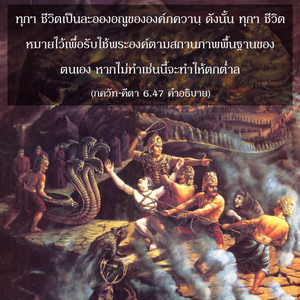
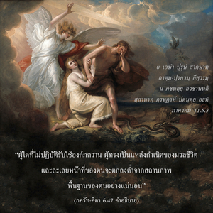

ในบรรดาโยคีทั้งหลายผู้ที่เปี่ยมไปด้วยความศรัทธา มีข้าเป็นสรณะอยู่เสมอ ระลึกถึงข้าอยู่ภายใน ปฏิบัติรับใช้ข้าด้วยความรักทิพย์ โยคีผู้นี้อยู่ร่วมกับข้าในโยคะอย่างใกล้ชิดที่สุด และเป็นบุคคลสูงสุด นี่คือความคิดเห็นของข้า




คำว่า ภชเต มีความสำคัญ ณ ที่นี้ ภชเต มีรากศัพท์มาจากคำกริยา ภชฺ ซึ่งใช้คำนี้เมื่อมีความจำเป็นในการรับใช้ คำว่า “บูชา” ไม่สามารถใช้ในความหมายเดียวกันกับคำว่า ภชฺ ได้ บูชาหมายความถึงการเคารพ หรือแสดงความนับถือ และให้เกียรติต่อผู้ที่ทรงเกียรติ แต่การรับใช้ด้วยความรัก และศรัทธา หมายถึงองค์ภควานฺเท่านั้น เราอาจหลีกเลี่ยงการบูชาผู้ที่เคารพนับถือ หรือเทพเทวดาได้ ซึ่งจะถูกเรียกว่าเป็นคนไม่มีมารยาท แต่เราไม่สามารถหลีกเลี่ยงการรับใช้องค์ภควานฺได้โดยไม่ถูกตำหนิอย่างรุนแรง ทุกๆ ชีวิตเป็นละอองอณูขององค์ภควานฺ ดังนั้น ทุกๆ ชีวิตหมายไว้เพื่อรับใช้พระองค์ตามสถานภาพพื้นฐานของตนเอง หากไม่ทำเช่นนี้จะทำให้ตกต่ำลง ภาควต (11.5.3) ได้ยืนยันไว้ดังต่อไปนี้
ย เอษำ ปุรุษํ สากฺษาทฺ
อาตฺม-ปฺรภวมฺ อีศฺวรมฺ
น ภชนฺตฺยฺ อวชานนฺติ
สฺถานาทฺ ภฺรษฺฏาห์ ปตนฺตฺยฺ อธห์
“ผู้ใดที่ไม่ปฏิบัติรับใช้องค์ภควานฺ ผู้ทรงเป็นแหล่งกำเนิดของมวลชีวิต และละเลยหน้าที่ของตนจะตกลงต่ำจากสถานภาพพื้นฐานของตนอย่างแน่นอน”
ในโศลกนี้คำว่า ภชนฺติ ได้นำมาใช้เช่นเดียวกัน ฉะนั้น คำว่า ภชนฺติ ใช้ได้เฉพาะกับองค์ภควานฺเท่านั้น ในขณะที่คำว่า “บูชา” สามารถใช้ได้กับเทพ หรือสิ่งมีชีวิตธรรมดาทั่วไป คำว่า อวชานนฺติ ที่ใช้ในโศลกของ ศฺรีมทฺ-ภาควตมฺ นี้ก็พบใน ภควัท-คีตา เช่นกัน อวชานนฺติ มำ มูฒาห์ “คนโง่ และเลวทรามเท่านั้นที่เย้ยหยันองค์ภควานฺ ศฺรีกฺฤษฺณ” พวกคนโง่เช่นนี้เขียนคำอธิบาย ภควัท-คีตา ด้วยตัวเอง โดยปราศจากท่าทีแห่งการรับใช้องค์ภควานฺ ดังนั้น พวกนี้ไม่สามารถแยกได้อย่างถูกต้องระหว่างคำว่า ภชนฺติ และคำว่า “บูชา”
การฝึกปฏิบัติโยคะทั้งหลายไปถึงจุดสุดยอดที่ ภกฺติ-โยค โยคะรูปแบบอื่นทั้งหลายเป็นเพียงวิถีทางเพื่อให้มาถึงจุด ภกฺติ ใน ภกฺติ-โยค อันที่จริงโยคะ หมายถึง ภกฺติ-โยค โยคะรูปแบบอื่นทั้งหมดเป็นขั้นบันไดเพื่อให้มาถึงจุดหมายปลายทางแห่ง ภกฺติ-โยค นี้ จากการเริ่มต้นของ กรฺม-โยค มาจนจบลงที่ ภกฺติ-โยค เป็นหนทางอันยาวไกลเพื่อความรู้แจ้งแห่งตน กรฺม-โยค โดยปราศจากผลทางวัตถุเป็นจุดเริ่มต้นแห่งวิถีทางนี้เมื่อ กรฺม-โยค พัฒนาความรู้ และการเสียสละ ระดับนี้เรียกว่า ชฺญาน-โยค เมื่อ ชฺญาน-โยค พัฒนาการทำสมาธิที่อภิวิญญาณด้วยวิธีการทางสรีระร่างกายต่างๆ นานา และตั้งสมาธิจิตอยู่ที่พระองค์ เรียกว่า อษฺฏางฺค-โยค เมื่อข้ามพ้น อษฺฏางฺค-โยค และมาถึงจุดแห่งบุคลิกภาพสูงสุดแห่งพระเจ้าองค์ศฺรีกฺฤษฺณ เรียกว่า ภกฺติ-โยค ซึ่งเป็นจุดสุดยอด อันที่จริง ภกฺติ-โยค เป็นจุดมุ่งหมายสูงสุด แต่เพื่อเป็นการวิเคราะห์ ภกฺติ-โยค อย่างละเอียดถี่ถ้วนเราต้องเข้าใจโยคะอื่นๆ เหล่านี้ ฉะนั้น โยคะที่เจริญก้าวหน้าจะอยู่บนวิถีทางแห่งความโชคดีนิรันดรอย่างแท้จริง ผู้ที่ยึดติดอยู่กับจุดหนึ่งจุดใดโดยเฉพาะ และไม่สร้างความเจริญก้าวหน้าขึ้นไปอีกมีชื่อเรียกเฉพาะนั้นๆ ว่า กรฺม-โยคี, ชฺญาน-โยคี หรือ ธฺยาน-โยคี, ราช-โยคี, หฐ-โยคี ฯลฯ หากผู้ใดโชคดีพอที่มาถึงจุดแห่ง ภกฺติ-โยค เข้าใจได้ว่าได้ข้ามพ้นโยคะอื่นๆ ทั้งหลาย ดังนั้น การมีกฺฤษฺณจิตสำนึกจึงเป็นระดับสูงสุดแห่งโยคะ เฉกเช่นเมื่อเราพูดถึง หิมาลย (หิมาลัย) เราหมายถึงเทือกเขาที่สูงที่สุดในโลก ภูเขาหิมาลัยที่มียอดสูงสุดจึงพิจารณาว่าเป็นจุดสุดยอด
ด้วยโชคอันมหาศาลที่เราได้มาถึงกฺฤษฺณจิตสำนึกบนหนทางแห่ง ภกฺติ-โยค และสถิตอย่างดีตามคำแนะนำของคัมภีร์พระเวท โยคีที่ดีเลิศตั้งสมาธิอยู่ที่องค์กฺฤษฺณ ผู้ทรงมีพระนามว่า ศฺยามสุนฺทร ผู้ทรงมีสีสันสวยงามดั่งก้อนเมฆ ทรงมีพระพักตร์คล้ายรูปดอกบัว ทรงมีรัศมีเจิดจรัสดั่งดวงอาทิตย์ ทรงมีพระอาภรณ์สว่างไสวไปด้วยอัญมณี และทรงมีพระวรกายประดับด้วยมาลัยดอกไม้ รัศมีอันงดงามของพระองค์เจิดจรัสไปทั่วทุกสารทิศมีชื่อว่า พฺรหฺม-โชฺยติรฺ พระองค์ทรงอวตารมาในรูปลักษณ์ต่างๆ เช่น พระราม, นฺฤสึห, วราห และ กฺฤษฺณ บุคลิกภาพสูงสุดแห่งพระเจ้า พระองค์เสด็จลงมาเยี่ยงมนุษย์ ทรงเป็นโอรสของพระนาง ยโศทา และมีพระนามว่า กฺฤษฺณ, โควินฺท และ วาสุเทว พระองค์ทรงเป็นโอรส เป็นพระสวามี เป็นพระสหาย และเป็นพระอาจารย์ที่สมบูรณ์ และพระองค์ยังเปี่ยมไปด้วยความมั่งคั่ง และคุณสมบัติทิพย์ทั้งหลาย หากผู้ใดรักษาจิตสำนึกอย่างเต็มเปี่ยมเกี่ยวกับลักษณะเหล่านี้ขององค์ภควานฺจะได้ชื่อว่าเป็นโยคีที่สูงสุด
ระดับแห่งความสมบูรณ์สูงสุดในโยคะนี้สามารถบรรลุได้ด้วย ภกฺติ-โยค เท่านั้น ดังที่ได้ยืนยันไว้ในวรรณกรรมพระเวททั้งหลายว่า
ยสฺย เทเว ปรา ภกฺติรฺ
ยถา เทเว ตถา คุเรา
ตไสฺยเต กถิตา หฺยฺ อรฺถาห์
ปฺรกาศนฺเต มหาตฺมนห์
“ดวงวิญญาณผู้ยิ่งใหญ่ที่มีความศรัทธาอย่างเปี่ยมล้นทั้งในองค์ภควานฺ และพระอาจารย์ทิพย์เท่านั้นที่สาระสำคัญทั้งหลายแห่งความรู้พระเวทจะถูกเปิดเผยโดยปริยาย” (เศฺวตาศฺวตร อุปนิษทฺ 6.23)
ภกฺติรฺ อสฺย ภชนํ ตทฺ อิหามุโตฺรปาธิ-ไนราเสฺยนามุษฺมินฺ มนห์-กลฺปนมฺ, เอตทฺ เอว ไนษฺกรฺมฺยมฺ “ภกฺติ หมายถึงการอุทิศตนเสียสละรับใช้ต่อองค์ภควานฺ ซึ่งมีอิสระเสรีจากความปรารถนาเพื่อผลกำไรทางวัตถุ ไม่ว่าในชาตินี้ หรือในชาติหน้า ปราศจากซึ่งแนวโน้มเช่นนี้เขาควรให้จิตใจซึมซาบอย่างบริบูรณ์ในองค์ภควานฺ นั่นคือจุดมุ่งหมายของ ไนษฺกรฺมฺย” (โคปาล-ตาปนี อุปนิษทฺ 1.15)
สิ่งเหล่านี้คือวิถีทางบางประการในการปฏิบัติ ภกฺติ หรือ กฺฤษฺณจิตสำนึก ซึ่งเป็นระดับสมบูรณ์สูงสุดแห่งระบบโยคะ